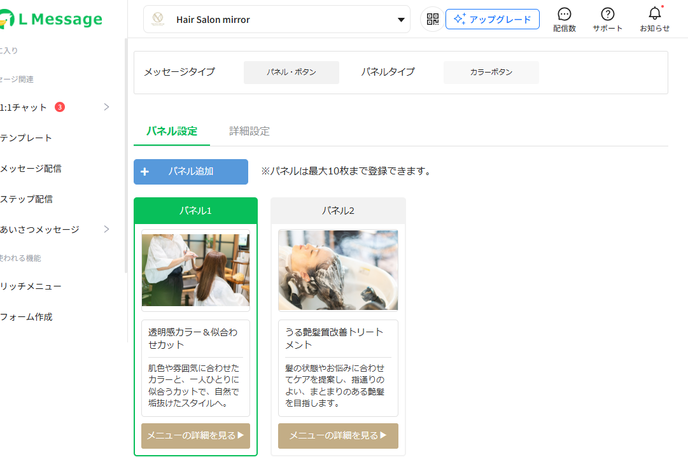
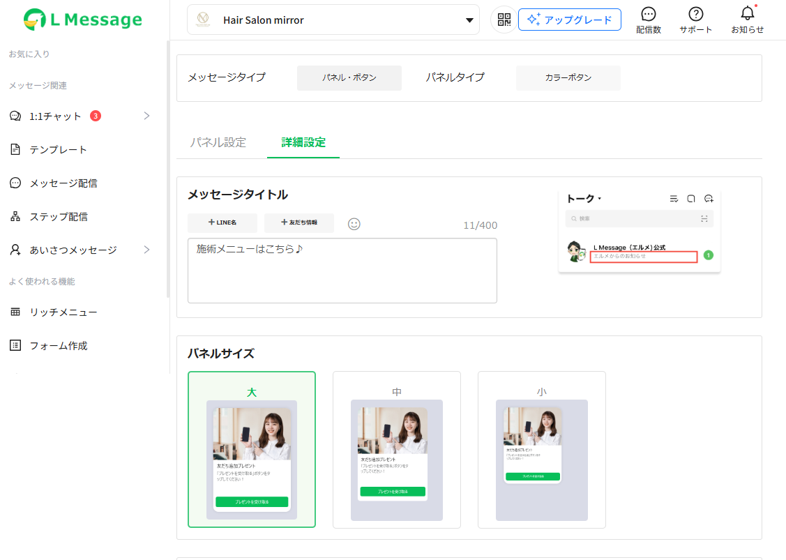
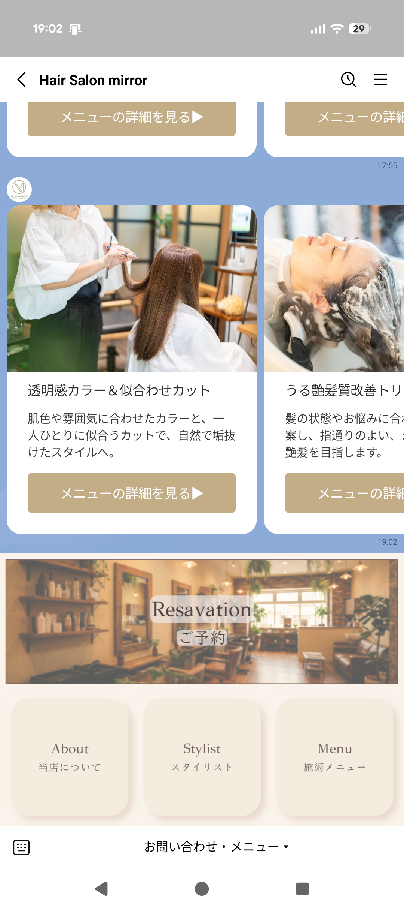
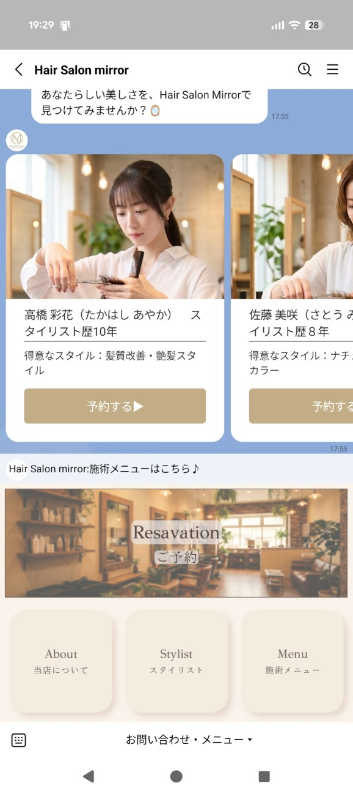
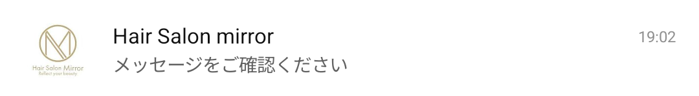
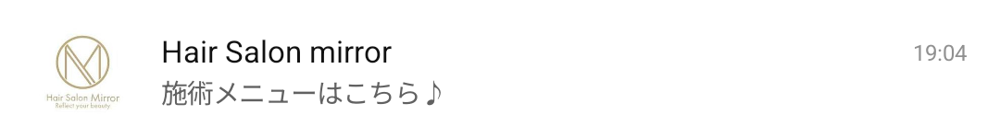
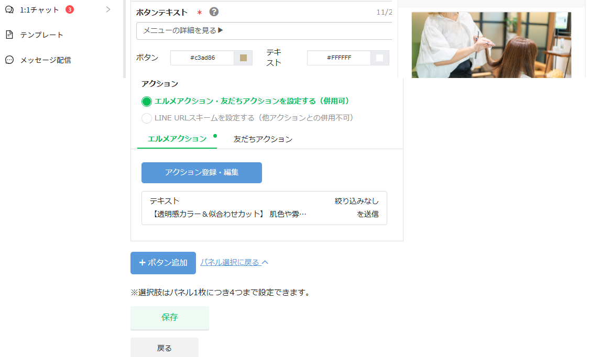
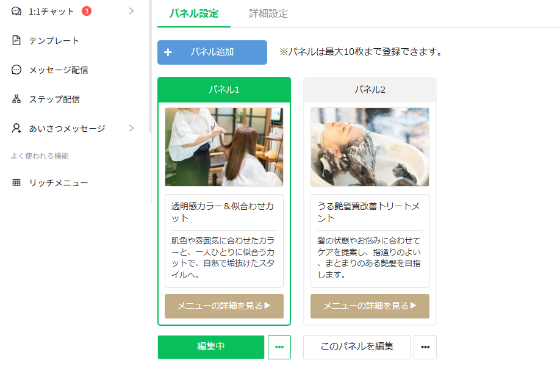

改善前との比較
テンプレート編集画面の課題と、プロトタイプでの改善点を並べています。改善前の画像は、実際のL Messageの管理画面と、Androidのスマートフォンで撮影したものです。
このページは選考課題のための提案用プロトタイプであり、実際のL Messageではありません。
1トーク一覧に出る文言の設定場所が見つからない
改善前

最初に開く「パネル設定」タブ。メッセージタイトルは見えない

「詳細設定」タブの中にある。見本画像の文言は固定
- 最初に開くタブからは見えない
- 選ばれていないタブが灰色の文字だけで、押せるものに見えない
- 「メッセージタイトル」という名称を知らないと、画面内でもヘルプでも探せない
改善後
- 右側にプレビューを常に表示
- プレビューのトーク一覧や通知を押すと、詳細設定タブに切り替わり、メッセージタイトル欄へ移動
- 名称を知らなくても、見え方から設定にたどり着ける
- タブを枠付きのボタンにし、中身の説明（「一覧・通知の文言、サイズ」）を添えた
② プレビューから設定へ移動 を試す
2設定した結果が、作った人の目に入りづらい
改善前

トーク画面。
タイトルは表示されない

さかのぼって見ている間に届くと、新着バーに表示

未入力時のトーク一覧：「メッセージをご確認ください」

「施術メニューはこちら♪」と入力した場合
- タイトルは通常のトーク画面には出ないため、テスト送信しても気づきにくい
- 未入力だと、どのお店でも同じ汎用の文言になり、ほかのアカウントの中で埋もれる
改善後
- 通知・トーク一覧・トーク画面を縦に並べ、実際に相手が目にする形で確認できる
- 入力した文言がプレビューにすぐ反映される
- 未入力の間は、プレビューに注意書きを表示
- 未入力のまま保存しようとすると、実際の表示例を見せて知らせる
④ 未入力のまま保存 を試す
3保存ボタンが見つけにくく、保存せずに戻ってしまいそう
改善前

保存ボタンは画面の一番下だけ。薄い色で、すぐ下に「戻る」
- 保存ボタンが画面の一番下にしかない
- 薄い緑で、濃い青の「＋ボタン追加」より目立たず、押せない状態にも見える
- マウスオーバーで保存は濃くなり、ほかのボタンは明るくなるなど反応が不統一
改善後
- 常に見えるプレビューの下にも保存ボタンを配置（画面下部の保存ボタンも残す）
- 保存ボタンを濃い緑（#08bf5a・白文字）にし、最も重要な操作だと分かるようにした
- マウスオーバー時の変化を「明るくなる」に統一
- 保存せずに戻ろうとすると確認を表示
③ 保存せずに戻る を試す
4パネルを選ぶ操作と、編集を始める操作が分かれている
改善前

各パネルの下に「編集中」「このパネルを編集」が並ぶ
- パネルを編集するには「このパネルを編集」ボタンを押す必要がある
- 「編集中」は状態の表示だが、濃い緑で塗られていて押せるボタンに見える
- 並べ替えは「…」メニューの「左に移動」「右に移動」で1枚ずつ行う
改善後
- 「編集中」表示と「このパネルを編集」ボタンをなくした
- パネル1・パネル2のカードを選ぶだけで、その編集画面が開く
- 選択中のパネルは、緑の枠と見出しで示す
- パネルをドラッグして順番を入れ替えられる
- 「…」メニューは「このパネルをコピー」「このパネルを削除」だけにし、削除時は確認を表示
① 最初に開いた画面 で試す